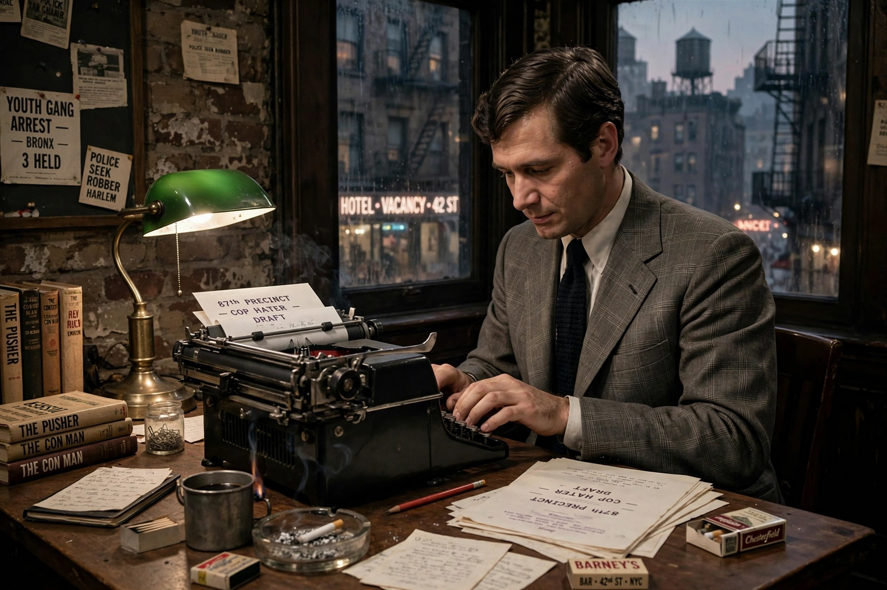

Ed McBain
 | |
| Born | Salvatore Albert Lombino, October 15, 1926, New York City, U.S. |
|---|---|
| Died | July 6, 2005 (aged 78), Weston, Connecticut, U.S. |
| Occupation | Novelist, screenwriter |
| Notable works | The 87th Precinct novels; as Evan Hunter, The Blackboard Jungle (1954) |
Ed McBain was a pen name of Evan Hunter (born Salvatore Albert Lombino; October 15, 1926 – July 6, 2005), an American author and screenwriter. Writing as McBain, he created the 87th Precinct series of police procedurals, one of the longest-running and most influential crime series in fiction. Under his own name, he wrote The Blackboard Jungle (1954) and the screenplay for Alfred Hitchcock's The Birds (1963).
Career
Hunter was born in New York City to Italian immigrant parents and served in the U.S. Navy during World War II. He legally changed his name to Evan Hunter in 1952. The success of The Blackboard Jungle, a novel about a New York vocational high school, made his name; it was filmed in 1955 with Glenn Ford.
As Ed McBain, he launched the 87th Precinct series with Cop Hater (1956), set in the fictional city of Isola. Over 55 novels followed, featuring detectives Steve Carella, Meyer Meyer, Bert Kling, and Arthur Brown, until Fiddlers (2005). The series pioneered the ensemble police procedural, realistic forensic detail, and multiple interwoven storylines; its approach influenced later writers including Maj Sjöwall and Per Wahlöö and television series from Hill Street Blues onward. Hunter also wrote the Matthew Hope series under the McBain name and many standalone novels and screenplays.